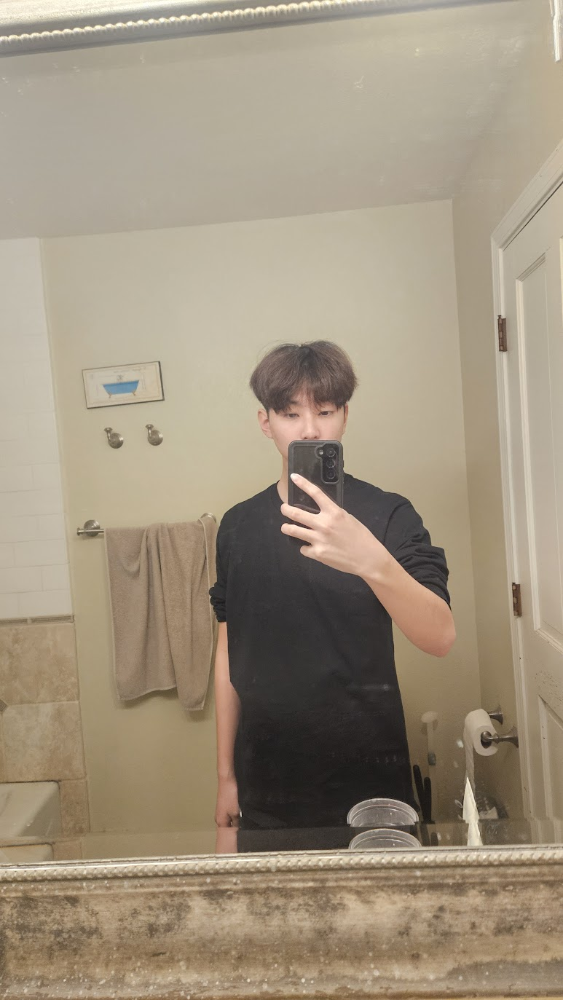

PATRICK KWON
Cognitive Science 1st year
i am a first year in cognitive science on the pre optoemtry track, im doing wdd decal for fun and just because i thought it would be something that would be a nice skill to have in the future. i like to drink boba

google
- although i knew spotify displayed songs, i didnt know their new releases view included new songs. I also learned that release radar is specific to the user
- i enjoyed how they broke down all components of an app. it opened my eyes to how this works
- There's a composer in view to add another tweet and the language is specific. It's not just "Add a Tweet", it's "Add another Tweet".
- 7